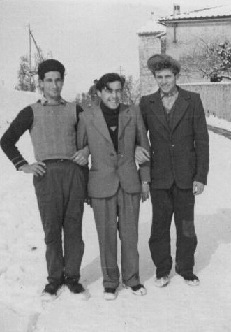

Quercegrossa (Ricordi e memorie)
CAPITOLO II - FAMIGLIE DEL '900
Indice dei Capitoli
Indice Famiglie del '900
BRUNI BRUNO (1939-1944); casieri; Castello; da Lucignano in Chianti.
Bruno Bruni di Gesualdo giunse al Castello di Quercegrossa nel 1939 occupando il posto di casiere e coltivatore delle terre del Pratellesi. L'accompagnavano la moglie Azeglia e il piccolo Rino di quattro anni. Bruno era nato nel 1910 a Lucignano in Chianti, sopra Pianella, da dove partirono per Quercegrossa. Poco tempo rimasero al Castello. Soltanto quattro anni per spostarsi nel 1944 all’Uliviera di Vagliagli dove Bruno iniziò a lavorare alle fornaci del Vanni a Castellina. Il figlio Rino lo ritroveremo molto più tardi, nell’industria del mobile.
BRUNI DOMENICO (1855 ca. - 1902); mezzadri; Sornano.
Era quasi mezzo secolo che i Bruni abitavano al podere di Sornano poi, nel febbraio 1902, la partenza, lasciando il posto ai Fattorini. Quando vi erano arrivati verso il 1855 avevano spoderato un’altra famiglia Bruni, nemmeno lontani parenti, e Domenico del fu Andrea vi entrò con la moglie Caterina Rugi e i figli Santi, Vincenzo detto Lorenzo, Francesco, Pietro, Andrea e la sorella Giulia andata sposa nel 1859. Dei suoi figli, Pietro e Francesco devono essere rimasti celibi; Lorenzo sposò nel 1858 una Cellesi di Belvedere, ma la povera Angela morirà due anni dopo nel 1861 senza lasciargli figli perché le due bambine avute Assunta ed Emilia periranno tra novembre e dicembre 1862 all’età di 3 e 4 anni; Santi prese Giuseppa Brogi nel 1862 e nacquero otto figli ma soltanto Ferdinando e Modesta sopravvissero; Andrea prese in moglie Caterina Manganelli di Pietralta nel 1868 e, dopo aver avuto sei figli, morì a 42 anni il 16 settembre 1883. Il capoccio Domenico era morto nel 1868 a 70 anni e negli anni seguenti la mortalità infantile aveva colpito almeno in dieci circostanze. Giuseppa Brogi morì nel 1892, Vincenzo e Santi spirarono nel 1897. Ma gli ultimi sei anni di permanenza a Sornano furono segnati da cinque matrimoni al termine dei quali la famiglia lasciò il podere. Nel 1896 Giulia del fu Andrea sposa un Olmastroni di S. Leonino; nel 1897 la sorella Emilia sposa Savino Bucci di Casapera; nel 1898 due matrimoni: Modesta di Santi prese Giuseppe Mori di Radda ed Emilio del fu Andrea trovò moglie al Poderino sposando Ida Landi; infine, Giulio del fu Andrea celebrò nel 1901 il suo matrimonio con Maria Manganelli dopo aver ricevuto la dispensa stante la parentela di 3° esistente tra gli sposi. Maria, infatti, era la figlia di un cugino di Caterina Manganelli moglie di Andrea Bruni. L’ultimo atto però fu il funerale del piccolo Angiolo di 3 anni, figlio di Giulio e Ida, fatto il 23 dicembre 1901. Ad anno nuovo partirono in dodici.
BRUTTINI (1904 - 1963/65); mezzadri; Mulinuzzo/Leccino Nuovo; da Lornano.
Il 3 marzo del 1904 i Bruttini fanno il loro ingresso al podere Mulinuzzo di Quercegrossa. Sono uno dei numerosi rami del ceppo Bruttini che si ritrovano sparsi un po' dappertutto nella provincia senese. I Bruttini del Mulinuzzo provengono da Lornano dove sono presenti almeno dal 1851 quando vi viene registrata la nascita di Annunziata di Alessandro. A questo primo battesimo seguono quelli di Giulio (1856), Giulia (1861), Cesira (1866) e Giuseppe (1870). Sono tutti figlioli del capoccio Alessandro del fu Gasparo e di Assunta Marri.

Augusto Bruttini detto “Gosto” con gli amici Danilo (a sinistra) e Dedo (a destra) nel 1956.
Nel 1885 risultano al podere Casanova di Lornano sei persone. Al Mulinuzzo i Bruttini vi resteranno per circa mezzo secolo prima di abbandonarlo con la fine della mezzadria, verso l'anno 1956. Un grande podere il Mulinuzzo che richiedeva numerose braccia e i Bruttini da otto che erano, più un garzone, divennero tredici nel 1936, e si rammenta dell'aiuto che ricevevano da salariati e minatori. Il capofamiglia del trasloco al Mulinuzzo fu Giulio del fu Alessandro, di 47 anni, accompagnato dalla seconda moglie Maria Chellini presa poco dopo la perdita di Caterina Muzzi, la prima moglie che gli aveva dato Modesto (1884) e Rotilio (1886) mentre Giulia, la futura perpetua di don Luigi Grandi, era nata da Maria.
C'era Giuseppe (1870), fratello del capoccio, di 33 anni, con la moglie Virginia Giannini e completava la famiglia l’anziana mamma Assunta Marri vedova di Alessandro. Poco dopo si aggiunse il garzone Pellegro Giannini. Un famiglia tutto sommato con un'età media piuttosto alta e senza gioventù, ma come vedremo i Bruttini rimedieranno all’inconveniente, ma dovremo aspettare gli anni Venti del Novecento. Infatti, Modesto, divenuto capoccio, prenderà moglie il 22 gennaio del 1920 a S. Giusto in Salcio, all’età di 36 anni, sposando Ersilia Carnasciali nativa di Radda. Quel 1920, iniziato in allegria per i matrimoni di Modesto e di Giulia con Attilio Bernardeschi, fini tristemente per la morte di Virginia, moglie di Giuseppe, e anche il successivo 1921 volle la propria vittima con un'altra Virginia, la prima figlia di Modesto, nata nel gennaio e morta di sei mesi a Luglio. Dal 1922, a scadenza biennale, nasceranno Gina (1922), Gino (1924) e Guido (1926) mentre Nello nel 1929 morirà alla nascita.
Con qualche anno di ritardo si sistema anche Rutilio con Maria Mazzi di Vagliagli che gli mette al mondo Primetta (1924), Duilia (1929), Augusto (1933) e Mario (1940), quest'ultimo nato quando il babbo ha 54 anni. I giovani Bruttini si integrarono perfettamente nella vita del paese divenendone simpatici protagonisti e su tutti Augusto conosciuto come "Gosto del Mulinuzzo". I due anziani fratelli Giulio e Giuseppe moriranno entrambi a 81 anni, l’uno nel 1937, l’altro nel 1952. Tra i loro nipoti Primetta sarà la prima a sistemarsi e nel 1940, all'età di 16 anni, prenderà per marito Ettore Riccucci di S. Leonino; Gina nel 1947 prenderà un Vigni di Lornano; Gosto si sposerà nel 1961 con Anna Taddei, con tanto di viaggio di nozze a Montecarlo; Mario e Duilia si sistemeranno anch'essi dopo l’abbandono del podere nel 1956 circa. La partenza per Siena della famiglia venne preceduta da alcuni anni di permanenza nella casa del Leccino Nuovo, inquilini dei Mencherini.
BUCCI EGIDIO (1912-1927); fattori/industriali; Quercegrossa.
Egidio Bucci, da non confondere col quasi coetaneo di Casapera, arrivò a Quercegrossa, proveniente dal Comune di Castelnuovo, come fattore degli Andreucci, e vi pose dimora nel 1912. Si stabilì nel Palazzaccio, considerato la fattoria della proprietà, che contava a quei tempi un solo contadino, il Buti. Nato da Angelo e Maria Lombardini e battezzato a S. Pancrazio Val di Pesa il 29 giugno 1875, dichiarava di provenire da Montespertoli, lasciata nel marzo 1897 per trasferirsi in diocesi di Arezzo nel territorio di Castelnuovo B.ga e da lì a Quercegrossa il 28 maggio 1912, subito dopo il matrimonio. Viveva con la moglie Eleonora Lusini, sposata a 37 anni nel 1912, e la figlia Pierina. La moglie, detta comunemente “Norina”, donna famosa par la vita che conduceva, gli creò dei grossi problemi per tutto il periodo di permanenza a Quercegrossa. Era nata a Marciano di Siena il 3 aprile 1891 dal commerciante Cesare di Savino e Alduina Fiaschi. Con la vendita ai Mori dei beni Andreucci nel 1916 anche Egidio cessò il suo incarico come fattore e si dedicò all’impresa dell'escavazione della lignite sui campi dei nuovi proprietari con i quali si associò tre anni dopo nel 1920. Per loro tutelò anche gli interessi di Giuseppe al momento della sua divisione dai fratelli e successivamente per lui curò la proprietà di Carpineto che aveva ricevuto nella liquidazione. Comunque il fattore Bucci deve aver svolto anche altri incarichi per i Mori se nel settembre del 1924 riceveva lire 1000 a saldo di prestazioni fatte al defunto sig. Lorenzo Mori e suoi eredi e successori. Se arrivò a Quercegrossa come agente di beni quando riparti nel 1927 venne definito "assistente a lavori", probabilmente a seguito della società costituita con i Mori e un altro socio. Terminò dunque nel 1927 la collaborazione con la suddetta famiglia e, dopo aver appianato con loro davanti a un notaio tutte le pendenze derivate dai contratti per la lignite e per l'appartamento "locazione risolta con il comune consenso delle parti", gli consegnò le chiavi di casa "del quartiere fino ad oggi tenuto in locazione" e partì per Siena portando con sé la somma di lire 440 ricevuta "come convenuto tra le parti" per aggiustare "le contestazioni fra loro". I più anziani lo ricordarono per il suo carattere bonario, ma soprattutto per la moglie e la lignite.
BUCCI SAVINO (1860-1931); mezzadri; Casapera.
Settanta anni di permanenza a Quercegrossa per questa famiglia di contadini. Entrarono a Casapera nel 1860 ed erano quattordici nel 1863. Scesero a sette nel 1890 per essere poi una decina nel 1931 al momento della divisione, o meglio, della partenza da Casapera. Quando vi giunsero nel 1860 la famiglia si articolava in due nuclei: quello del fu Francesco con il figlio Ignazio, e l'altro del fu Savino (ca. 1800) con i figli Giovanni (1826), Stefano (1829) e Luigi(1840). Quest'ultimo sarà il continuatore della famiglia a Casapera in quanto il capoccio Stefano e l'altro fratello Giovanni resteranno celibi. Anche Ignazio di Francesco lascerà ben presto la famiglia per spostarsi a Quetolino e da lì a Basciano, dove risultano matrimoni dei suoi figli a fine Ottocento. Presa dunque in moglie Maria Partini a Castellina in Chianti, intorno al 1864/65 all'età di venticinque anni, Luigi mette al mondo una discreta schiera di figli (sette) a incominciare dal primo maschio nel 1866 che battezza subito Savino, come il nonno. Tra i suoi figli ci interessano soltanto Savino e Giuseppe (1881) perché saranno loro a dare continuità alla famiglia Bucci. Alla morte di Stefano nel 1905, Savino diventerà il capoccio e sposerà il 20 febbraio del 1907 la 20enne Emilia dei Bruni di Sornano. Prenderà il via la nuova generazione alla quale contribuirà col suo discreto contributo di ben nove figli che assommati a quelli di Giuseppe porteranno a quattordici nascite in circa trenta anni. Infatti, Giuseppe che ha sposato Rosa figlia di Giulio dei Carli del Paradiso il 4 giugno del 1910, metterà al mondo cinque figli. Col passare del tempo si arriva al 1928 quando improvvisamente moriva Savino, e fu presumibilmente dopo la morte del fratello che Giuseppe lasciò Casapera ai nipoti, i quali trascorsero ancora cinque anni sotto il comando di Egidio prima di arrivare alla definitiva divisione della famiglia e conseguente partenza di tutti i Bucci dal podere. Il primo a partire fu il gruppo di Nello che si portò dietro la mamma Emilia, il fratello Ottavio (l'ottavo figlio di Savino) e Nella: figurano messi in partenza il 16 febbraio 1931 per S. Stefano di Basciano e poi da lì per un luogo sconosciuto di Castelnuovo B.ga. Rimase a Casapera il solo Egidio con la moglie Eugenia dei Provvedi di Sornano, sposata nel 1924, ma senza figli. Non c'era nessun altro perché le sorelle si erano tutte sistemate nell’ultimo decennio e altri due fratelli erano morti in giovane età. Egidio resse soltanto due mesi, poi fu costretto a partire e lasciò Casapera il 21 aprile del 1931. Oggi, solo in pochi hanno un vago ricordo di questa antica famiglia che nella sua storia ha avuto circa venticinque battesimi e altrettanti funerali nella parrocchia di Quercegrossa.
BURIANI (1913-1917); mezzadri; Quercegrossa; dalla Torre di Passeggeri.
Bonaventura Buriani, figlio dell’Ospedale di Siena, entrò a Quercegrossa il 16 marzo 1913 e andò ad abitare nel Palazzaccio Andreucci probabilmente come colono, condizione che avevano anche alla Torre di Passeggeri da dove provenivano e dove nel 1905 era nato Armando di Bonaventura. A Quercegrossa, Bonaventura vide partire la figlia Annunziata (1893) maritata il 18 ottobre 1918 con Egidio dei Fosi di S. Fedele, ma ritrovò l’altra figlia Emma sposata al Donnini e residente al Leccino dal 1915. Così quando Bonaventura lasciò Quercegrossa il 26 agosto 1917 per prendere casa alla Ripa di Basciano partì con la moglie Isolina e i figli Dante e Virgilio. Poco prima del 1930 tornò a Siena in Pantaneto. Emma Buriani era nata a S. Gusmè il 25 ottobre 1888.
La famiglia Buriani al completo. Da sinistra: Emma. mamma Isolina, Bonaventura, Annunziata. Dietro, i figli Dante e Virgilio.
BURRESI (1899 - 1923/25); mezzadri; Olmicino/Petroio/Passeggeri; da Barberino di Val d’Elsa.
A capo di una discreta famiglia di dodici persone, Fortunato Burresi di 43 anni entrò all'Olmicino il 10 marzo 1899. Proveniente da Barberino di Val d’Elsa aveva avuto dalla moglie Adele Berlincioni quattro figli: Brunetto di 14 anni, Concetta di 11, Giovanna di 9 e Gaetano, chiamato come il nonno, di 3 anni. Lo seguivano anche i fratelli Faustino, celibe, ed Elìa o Elio di 33 anni, coniugato con Annunziata Martini, con due figli: Giuseppe di 6 anni e Violante di 2. Di Fortunato si registra la morte di Giovanna a 13 anni nel 1903 e il matrimonio di Concetta nel 1910 con Emilio Goretti dell'Osservanza. A seguito del matrimonio di Brunetto con Rosa Salvini, nascono nel 1915, Aurelio, battezzato a S. Leonino, e nel 1916 Armando, battezzato a Vagliagli il 29 giugno e segnato colono a Petroio, a testimonianza che Brunetto si è trasferito in quell’anno, dividendosi da Elio che è tornato a Passeggeri, podere Barberino, dove risulta ancora presente nel 1923 come prova il matrimonio di Violante con Gustavo Marchi di Lornano celebrato il 9 giugno di quello stesso anno. La famiglia di Brunetto, invece, lascia Petroio prima del 1921, senza ulteriori avvenimenti familiari.
BURSAGLI STEFANO (1914 ca. - 1921); pigionali; Castagnoli.
Pigionale a Castagnoli, Stefano Bursagli del fu Giuseppe e fu Maria Orsi vi morì il 3 ottobre 1921 in età di 73 anni, precedendo la moglie Assunta Bruni di soli 24 giorni. Infatti, Assunta del fu Giuseppe e fu Giuseppa Bonechi esalò l’ultimo respiro il 27 ottobre. Poco altro sappiamo di questa coppia di anziani coniugi, né da quanto tempo dimoravano a Castagnoli. Certamente cercavano di sopravvivere dopo che la figlia Ernesta si era sposata a Quercegrossa il 23 gennaio 1915 ed era tornata a Greve presso il marito Giovanni Battista Lepri.
BUSSAGLI (1926 - 1956/57); mezzadri/salariati; Quetole/Pietralta;
da Castellina in Chianti.
A Quetole agli inizi del "Ventisei", dopo la partenza del Pallassini, vi tornò la famiglia Bussagli. Modesta famiglia quella di Lorenzo Bussagli e di Natalina Mori, accompagnati dal figlio maggiore Ettore di 24 anni e i due gemelli Maria e Mariano nati nel 1913 a Castellina in Chianti, come tutta la famiglia. C'era anche Olimpia, ma il 19 febbraio 1927 si era sposata ed era tornata a Castellina col marito Virgilio Pianigiani. Pochi gli avvenimenti nei successivi anni e bisogna arrivare al 1936 per registrare la morte di Natalina a Quetole e poi al 1943 per la scomparsa di Lorenzo, ridotto a salariato, come i figlioli, nell'abitazione di Pietralta dove si erano trasferiti alcuni anni prima. Dei due fratelli nessuno prese moglie mentre Maria il 12 ottobre 1946 si unì a Dino Stazzoni del Casino. Un decennio dopo, nel 1956/57, Ettore e Mariano tornarono a Vagliagli.
Inizio pagina
Indice famiglie del '900
Indice dei Capitoli
|